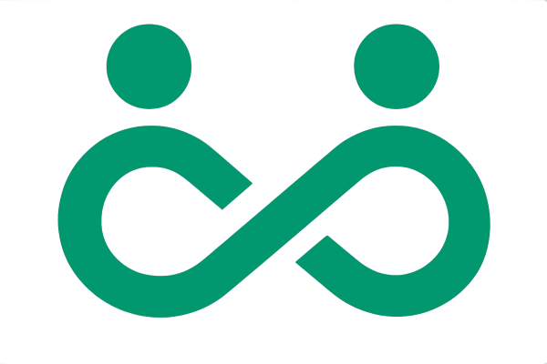
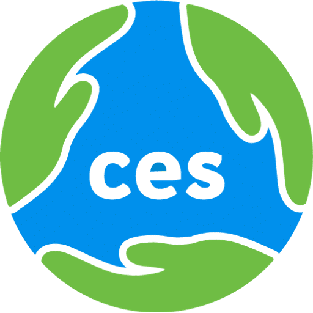
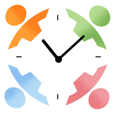

🌱 Growing a worldwide network of community exchange, mutual aid, and local resilience
Community Exchange Network brings together organisations, platforms, and communities working with community exchange, mutual credit, time banking, and local resilience. It is a shared space for joining efforts, sharing learning, and building stronger connections across the movement.
We envision a world where communities are less dependent on extractive money systems and more able to meet needs through cooperation, reciprocity, and local resilience. CEN exists to help grow a living ecosystem of exchange systems that strengthen human relationships, reduce isolation, and open practical pathways toward greater economic freedom.
Our mission is to connect and support exchange-based organisations so they can learn from one another, collaborate more effectively, and develop shared tools, protocols, and infrastructure that help communities thrive. We are here to strengthen the movement from within: by supporting existing initiatives, helping new communities emerge, and creating the conditions for deeper cooperation across platforms and regions.
Across the world, people are already creating practical alternatives to money-led economic life. CEN helps bring these efforts into relationship so they can grow stronger, more visible, and more effective together.
We work to connect aligned networks, support open-source platform development, strengthen collaboration, and build shared infrastructure for a more cooperative and resilient economy.
We develop adaptable, multilingual open-source software for community exchange. Komunitin powers CES2, the new generation of the Community Exchange System, and we are building open protocols for interoperability with TimeOverflow.
📂 Explore the source code or report issues:
CEN currently brings together three participating organisations, each contributing distinct experience and communities to one growing ecosystem.

Founded in 2003, CES is the oldest and largest of the three organisations. Its current software is tried and tested — the new CEN platform will carry that experience forward for a mobile-first generation.
Sign upAn open-source app combining a local community currency wallet with a marketplace, making it easy for a decentralised set of local currencies to trade with one another.
Sign up
Open-source software built by volunteers to run the everyday work of time banks — helping administrators manage members and connecting people across the bank.
Sign upIf you are building or supporting mutual credit, community exchange, time banking, or local economic alternatives, we invite you to join us. Let's combine efforts and move with greater coherence toward a new economic era.
Get in touch